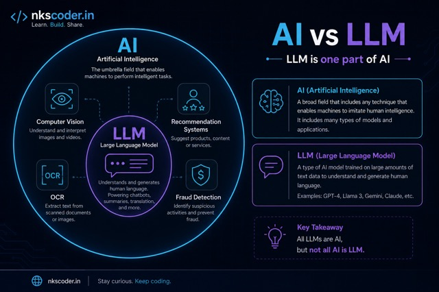

Quick answer: LLM full form is Large Language Model. It is a type of AI trained on text so it can answer questions, write content, summarize documents, translate language, and help with code.
If you searched for "LLM full form", "LLM meaning", "LLM examples", or "is ChatGPT an LLM", this short guide gives the direct answer in simple words.
LLM Full Form
LLM = Large Language Model.
- Large - trained on a huge amount of text data
- Language - works with words, sentences, and human communication
- Model - the trained AI program that generates answers

LLM Meaning in Simple Words
An LLM is like a very powerful autocomplete system. You give it a question or instruction, and it predicts the most useful answer based on patterns it learned during training.
It does not think like a human. It finds patterns in language and generates text that looks useful, natural, and relevant.
Simple LLM Examples
- ChatGPT - chat app powered by GPT models
- Claude - used for writing, reasoning, and long documents
- Gemini - Google's AI model family
- Llama - open model that can run locally with Ollama
- Mistral, Qwen, DeepSeek - popular models for coding and apps
Is ChatGPT an LLM?
ChatGPT is the app you use in the browser. The LLM is the model behind it, such as GPT. So the simple answer is: ChatGPT uses an LLM, but ChatGPT and the LLM are not exactly the same thing.
LLM vs AI
AI is the broad category. It includes many systems: recommendation engines, fraud detection, OCR, face recognition, chatbots, and more.
LLM is one type of AI focused on language. It reads and writes text, explains topics, summarizes documents, and helps with code.

Types of LLM
- Cloud LLMs - GPT, Claude, and Gemini run on company servers
- Open/local LLMs - Llama, Mistral, Qwen, and DeepSeek can run on your own computer or server
- Domain LLM apps - systems built for banking, support, legal documents, or healthcare workflows
What Can You Use an LLM For?
- Explain difficult topics in simple language
- Write emails, blogs, and reports
- Summarize PDFs and long documents
- Help with Python, JavaScript, SQL, and debugging
- Build private AI workflows with local tools like Ollama
Important Limit
LLMs can make mistakes. They can give a confident answer even when the answer is wrong. For money, legal, medical, or production decisions, always verify the result.
Want the beginner version first? Read the simple guide or learn how to run LLMs locally.
What Is an LLM? LLM for Beginners What Is Ollama?